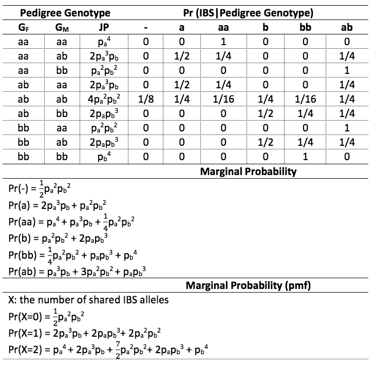

Let X=the number of shared IBD alleles (Score: 15)
a. What is the distribution of X for a sibling pair and what is the coefficient of relationship and kinship coefficient? (Score 5)
For a sibling pair, X could be 0, 1, 2
\(f_X(x) = \begin{cases}\pi_0,\ if\ x = 0\\ \pi_1,\ if \ x = 1 \\ \pi_2,\ if \ x =2\end{cases}\)
And in this case, \(\pi_0 = \frac{1}{4}\), \(\pi_1 = \frac{1}{2}\), \(\pi_2 = \frac{1}{4}\)
Coeficaient of relationship: \(E(x) = 0 * \pi_0 + 1 * \pi_1 + 2*\pi_2 \\ = 0 + \frac{1}{2} + \frac{1}{2} = 1\)
Kinship coefficient: \(\varphi = \frac{E(X)}{4} = \frac{1}{4}\)
b. What is the distribution of X for a parent-child pair and what is the coefficient of relationship and kinship coefficient? (Score 5)
There is only one shared IBD allele between a parent-child pair, and it is also the only situation can happen for a parent-child pair.
\(\pi_0 = 0\), \(\pi_1 = 1\), \(\pi_2 = 2\)
Coeficaient of relationship: \(E(x) = 0 * \pi_0 + 1 * \pi_1 + 2*\pi_2 \\ = 0 + 1*1 + 0 = 1\)
Kinship coefficient: \(\varphi = \frac{E(X)}{4} = \frac{1}{4}\)
c. What is the distribution of X for a grandparent-grandchild pair and what is the coefficient of relationship and kinship coefficient? (Score 5)
There must be one shared IBD allele between a parent-child pair, hence, the child must has an allele which is come from his/her grandmother or grandfather.
So, \(\pi_0 = 0\), \(\pi_1 = \frac{1}{2}\), \(\pi_2 = 0\)
Coeficaient of relationship: \(E(x) = 0 * \pi_0 + 1 * \pi_1 + 2*\pi_2 \\ = 0 + 1*\frac{1}{2} + 0 = \frac{1}{2}\)
Kinship coefficient: \(\varphi = \frac{E(X)}{4} = \frac{1}{8}\)
Suppose a disease has autosome dominant inheritance of allele D for a gene locus with allele D and d (i.e. Pr(Y=1|G)=1 if G=DD or Dd, and Pr(Y=1|G)=0 if G=dd). Let X=the number of shared IBD alleles between an affected sibling pair. (Score: 15)
a. If father genotype is Dd and mother genotype is dd, what is probability of X=0, 1 and 2 respectively? (Score: 5)
Children’s possible genotypes:
\(D_fd_f\ \times\ d_{m1}d_{m2} => \begin{cases}D_fd_{m1},\ Pr = \frac{1}{4} \\ D_fd_{m2},\ Pr = \frac{1}{4} \\d_fd_{m1},\ Pr = \frac{1}{4} \\d_fd_{m2},\ Pr = \frac{1}{4} \end{cases}\)
And among those four cases, only \(D_fd_{m1}\) and \(D_fd_{m2}\) are affected genotype.
\(Pr(D_fd_{m1}) = Pr(D_fd_{m2}) = \frac{\frac{1}{4}}{\frac{1}{4} + \frac{1}{4}} = \frac{1}{2}\)
By multiplication rule we can calculate the frequency for each X :
\((\frac{1}{2}D_fd_{m1} + \frac{1}{2}D_fd_{m2})^2\)
\(= \frac{1}{4}(D_fd_{m1}, D_fd_{m1}) + \frac{1}{4}(D_fd_{m2}, D_fd_{m2}) + \frac{1}{2}(D_fd_{m1}, D_fd_{m2})\)
| X | Offerspring Genotypes | Probability |
|---|---|---|
| 1 | \((D_fd_{m1}, D_fd_{m2})\) | \(\frac{1}{2}\) |
| 2 | \((D_fd_{m1}, D_fd_{m1})\), \((D_fd_{m2}, D_fd_{m2})\) | \(\frac{1}{2}\) |
So,
\(Pr(x) = \begin{cases}0,\ x = 0 \\ \frac{1}{2},\ x = 1 \\ \frac{1}{2},\ x = 2\end{cases}\)
b. If father genotype is Dd and mother genotype is also Dd, what is the distribution of X? what is E(X)? and what is the Var(X)? (Score: 10)
Children’s possible genotypes:
\(D_fd_f\ \times\ D_{m}d_{m} => \begin{cases}D_fD_{m},\ Pr = \frac{1}{4} \\ D_fd_{m},\ Pr = \frac{1}{4} \\d_fD_{m},\ Pr = \frac{1}{4} \\d_fd_{m},\ Pr = \frac{1}{4} \end{cases}\)
And among those four cases, there are three affected genotypes:
\(Pr(D_fD_{m}) = Pr(D_fd_{m}) = Pr(d_fD_{m}) = \frac{1/4}{1/4+1/4 +1/4} = \frac{1}{3}\)
By multiplication rule we can calculate the frequency for each X :
\((\frac{1}{3}D_fD_m + \frac{1}{3}D_fd_m + \frac{1}{3}d_fD_m)^2\)
\(= \frac{1}{9}(D_fD_m,D_fD_m) + \frac{1}{9}(D_fd_m,D_fd_m) + \frac{1}{9}(d_fD_m,d_fD_m) + \frac{2}{9}(D_fD_m,D_fd_m) + \frac{2}{9}(D_fD_m,d_fD_m) +\frac{2}{9}(D_fd_m,d_fD_m)\)
| X | Offerspring Genotypes | Probability |
|---|---|---|
| 0 | \((D_fd_m,d_fD_m)\) | \(\frac{2}{9}\) |
| 1 | \((D_fD_m,D_fd_m)\), \((D_fD_m,d_fD_m)\) | \(\frac{4}{9}\) |
| 2 | \((D_fD_m,D_fD_m)\), \((D_fd_m,D_fd_m)\), \((d_fD_m,d_fD_m)\) | \(\frac{1}{3}\) |
So,
\(Pr(x) = \begin{cases}\frac{2}{9},\ x = 0 \\ \frac{4}{9},\ x = 1 \\ \frac{1}{3},\ x = 2\end{cases}\)
\(E(X) = 0*\frac{2}{9} + 1*\frac{4}{9} + 2*\frac{1}{3} = \frac{10}{9}\)
\(E(X^2) = 0*\frac{2}{9} + 1*\frac{4}{9} + 4*\frac{1}{3} = \frac{16}{9}\)
\(Var(X) = E(X^2) - E(x)^2 = \frac{16}{9} - (\frac{10}{9})^2 = \frac{52}{27}\)
Let X be the number of shared IBS alleles for a sibling pair with Dd genotype for both parents. What are the E(X) (Score 10) and Var(X)? (Score 15)
Children’s possible genotypes:
\[Dd\ \times\ Dd => \begin{cases}DD,\ Pr = \frac{1}{4} \\ Dd,\ Pr= \frac{1}{2} \\ dd,\ Pr = \frac{1}{4} \end{cases}\]
By multiplication rule we can calculate the frequency for each X:
\((\frac{1}{4}DD + \frac{1}{2}Dd + \frac{1}{4}dd)^2\)
\(= \frac{1}{16}(DD,DD) + \frac{1}{4}(Dd,Dd) + \frac{1}{16}(dd,dd) + \frac{1}{4}(DD,Dd) + \frac{1}{8}(DD,dd) + \frac{1}{4}(Dd,dd)\)
| X | Offerspring Genotypes | Probability |
|---|---|---|
| 0 | \((DD,dd)\) | \(\frac{1}{8}\) |
| 1 | \((DD,Dd)\), \((Dd,dd)\) | \(\frac{1}{2}\) |
| 2 | \((DD,DD)\), \((Dd,Dd)\), \((dd,dd)\) | \(\frac{3}{8}\) |
So,
\(Pr(x) = \begin{cases}\frac{1}{8},\ x = 0 \\ \frac{1}{2},\ x = 1 \\ \frac{3}{8},\ x = 2\end{cases}\)
\(E(X) = 0*\frac{1}{8} + 1*\frac{1}{2} + 2*\frac{3}{8} = \frac{5}{4}\)
\(E(X^2) = 0*\frac{1}{8} + 1*\frac{1}{2} + 4*\frac{3}{8} = 2\)
\(Var(X) = E(X^2) - E(X)^2 = 2 - (\frac{5}{4})^2 = \frac{7}{16}\)
a. Fill out the table below. X is a random variable for the number of shared IBS (Score: 10)

b. For a sibling pair, if pa= 0.5, what is Pr(X=0), Pr(X=1) and Pr(X=2), respectively? What is the E(X) and Var(X)? What are the answers if pa= 0.01. (Score: 5)
If \(p_a = 0.5\)
\(Pr(X=0) = 0.5 * 0.5^2 * 0.5^2 = 0.5^5 = 0.03125\)
\(Pr(X=1) = 2 * 0.5^4 + 2 *0.5 ^4 + 2 *0.5 ^4 = 0.375\)
\(Pr(X=2) = 0.5^4 + 2*0.5^4 + 3.5*0.5^4 + 2*0.4^4 + 0.5^4 = 0.59375\)
\(E(X) = 0*0.03125 + 1*0.375 + 2*0.59375 = 1.5625\)
\(E(X^2) = 0*0.03125 + 1*0.375 + 4*0.59375 = 2.75\)
\(Var(X) = E(X^2) - E(X)^2 = 2.75 - 1.5625^2 = 0.30859375\)
If \(p_a = 0.01\)
\(Pr(X=0) = 0.5 * 0.01^2 * 0.99^2 = 0.000049005\)
\(Pr(X=1) = 2 * 0.01^3 * 0.99 + 2 *0.01 * 0.99^3 + 2 *0.01^2 * 0.99^2 = 0.01960398\)
\(Pr(X=2) = 0.01^4 + 2*0.01^3 * 0.99 + 3.5*0.01^2 * 0.99^2 + 2*0.01 * 0.99^3 + 0.99^4 = 0.980347015\)
Causal locus (D and d), LD locus(A and a), f(D) = 0.4, f(A|D) = 0.9, f(A|d) = 0.2. What is the frequency of haplotype DA, haplotype Da, haplotype dA, haplotype da and genotype DdAa in the population? (Score: 10)
f(D) = 0.4, f(d) = 0.6
f(A|D) = 0.9, f(a|D) = 0.1
f(A|d) = 0.2, f(a|d) = 0.8
Pr(DA) = f(A|D)f(D) = 0.9 * 0.4 = 0.36
Pr(Da) = f(a|D)f(D) = 0.1 * 0.4 = 0.04
Pr(dA) = f(A|d)f(d) = 0.2 * 0.6 = 0.12
Pr(da) = f(a|d)f(d) = 0.8 * 0.6 = 0.48
Genotype DdAa has two possible haplotype combinations: DA-da and Da-dA.
Based on multiplication rules, we can get:
Pr(DdAa) = 2 * 0.36 * 0.48 + 2 * 0.04 * 0.12 = 0.3552
Causal locus (D and d), LD locus( A and a), f(D) = 0.4, f(A|D) = 0.9, f (A|d) = 0.2. Genotype variable X : the number of D and genotype variable Y : the number of A. What is the covariance of X and Y ? and What is the Correlation? (Score 10)
f(D) = 0.4, f(d) = 0.6
f(A|D) = 0.9, f(a|D) = 0.1
f(A|d) = 0.2, f(a|d) = 0.8
Pr(DA) = f(A|D)f(D) = 0.9 * 0.4 = 0.36
Pr(Da) = f(a|D)f(D) = 0.1 * 0.4 = 0.04
Pr(dA) = f(A|d)f(d) = 0.2 * 0.6 = 0.12
Pr(da) = f(a|d)f(d) = 0.8 * 0.6 = 0.48
From multiplcation rule:
\((0.36DA + 0.04Da + 0.12dA + 0.48da)^2\)
\(= 0.1296(DDAA) + 0.0016(DDaa) + 0.0144(ddAA) + 0.2304(ddaa) + 0.0288(DDAa) + 0.0864(DdAA) + 0.3456(DdAa) + 0.0096(DdAa) + 0.0384(Ddaa) + 0.1152(ddAa)\)
For variable X(the number of D):
| X | Genotype | Probablity |
|---|---|---|
| 0 | ddAA, ddaa, ddAa | 0.36 |
| 1 | DdAA, DdAa, Ddaa | 0.48 |
| 2 | DDAA, DDaa, DDAa | 0.16 |
E(X) = 0.48 + 0.16*2 = 0.8
\(E(X^2) = 0.48 + 0.16*4 = 1.12\)
\(Var(X) = E(X^2) - E(X)^2 = 1.12 - 0.8^2 = 0.48\)
\(sd(X) = \sqrt{Var(X)} = 0.69282\)
For variable Y(the number of A):
| Y | Genotype | Probablity |
|---|---|---|
| 0 | aaDD, aaDd, aadd | 0.2704 |
| 1 | AaDD, AaDd, Aadd | 0.4992 |
| 2 | AADD, AADd, AAdd | 0.2304 |
E(Y) = 0.4992 + 0.2304*2 = 0.96
\(E(Y^2) = 0.4992 + 0.2304*4 = 1.4208\)
\(Var(Y) = E(Y^2) - E(Y)^2 = 1.4208 - 0.96^2 = 0.4992\)
\(sd(Y) = \sqrt{Var(Y)} = 0.70654\)
For variable (XY):
| XY | Genotype | Probablity |
|---|---|---|
| 0 | DDaa, ddAA, ddaa, Ddaa, ddAa | 0.4 |
| 1 | DdAa | 0.3552 |
| 2 | DDAa, DdAA | 0.1152 |
| 4 | DDAA | 0.1296 |
E(XY) = \(0.3552 + 0.1152*2 + 0.1296*4\) = 1.104
Cov(X,Y) = E(XY) - E(X)E(Y) = 1.104 - 0.8*0.96 = 0.336
Corr(X,Y) = \(\frac{Cov(X,Y)}{sd(X)sd(Y)} = \frac{0.336}{0.69282*0.70654} = 0.6864\)
The covariance of X and Y is 0.336 and the Correlation is 0.6864.
Causal locus (D and d), LD locus (A and a), f(D) = 0.4, f(A|D) = 0.9, f(A|d) = 0.2. Dichotomous allele variable X: the number of D and dichotomous allele variable Y: the number of A. What is the covariance of X and Y ? (i.e. LD measure δ) and What is the Correlation? (i.e. LD measure r) (Score 10)
f(D) = 0.4, f(d) = 0.6
f(A|D) = 0.9, f(a|D) = 0.1
f(A|d) = 0.2, f(a|d) = 0.8
Variable X:
X = 1: f(D) = 0.4
X = 0: f(d) = 0.6
E(X) = f(D) = 0.4
Var(X) = f(D)(1-f(D)) = 0.4*0.6 = 0.24
Variable Y:
Y = 1: \(f(A) = f(A|D)f(D) + f(A|d)f(d) = 0.9*0.4 + 0.2*0.6 = 0.48\)
Y = 0: \(f(a) = f(a|D)f(D) + f(a|d)f(d) = 0.1*0.4 + 0.8*0.6 = 0.52\)
E(Y) = f(A) = 0.48
Var(Y) = f(A)(1-f(A)) = 0.48*0.52 = 0.2496
E(XY) = f(DA) = f(A|D)f(D) = 0.9 * 0.4 = 0.36
Cov(X,Y) = E(XY) - E(X)E(Y) = 0.36 - 0.4*0.48 = 0.168
Corr(X,Y = \(\frac{Cov(X,Y)}{\sqrt{Var(X)}\sqrt{Var(Y)}} =\frac{0.168}{\sqrt{0.24}\sqrt{0.2496}} = 0.686\)
The covariance of X and Y is 0.168 and the Correlation is 0.686.